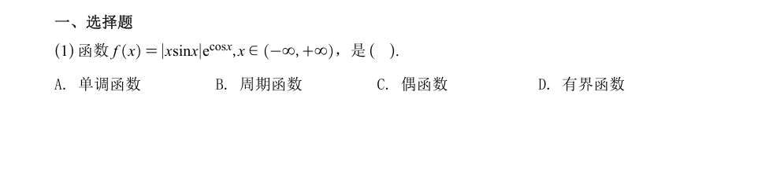
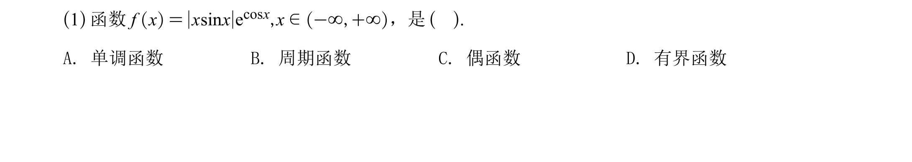

都在 1080px 宽的作答台里、2 倍像素密度（Retina）下渲染。下半部分是同一处放大 2.36 倍的细节。


| 方案 | 清晰度 | 体积/题 | 可选中·可搜索 | 落地成本 | 出错风险 |
|---|---|---|---|---|---|
| 现状 JPEG 995px | 2× 屏偏糊，大屏更糊 | 8 KB | 否 | 0 | 无 |
| 高 DPI 重裁（300 dpi PNG） | 任何屏都锐，放大到 200% 仍清晰 | 18 KB | 否 | 一个脚本，1 小时 | 无（只换像素） |
| SVG 矢量重裁 | 无限缩放、可打印 | 92 KB（gzip） | 否 | 需清洗导出瑕疵 | 填充/字体兼容要逐张验 |
| OCR → LaTeX 文本重排 | 最锐、可换行、字号自适应 | 1 KB | 是 | 2272 题 + 人工校对 | 公式识别错 = 题目错 |